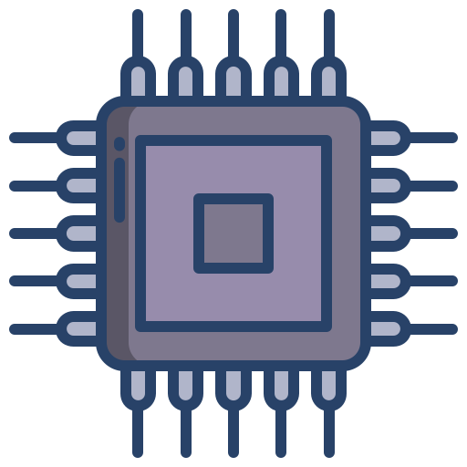

What do we do.....

In the early 1960s at Tokyo’s Bridgestone Museum of Art, curator Hideo Matsushita hosted LP listening concerts,
where people would experience vinyl records played on high-quality audio equipment.
Matsushita was moved by the positive reactions guests had to the music,
but was frustrated that the expense of high-fidelity listening prevented many people from experiencing it.
In 1962, Matsushita founded Audio-Technica with the vision of producing high-quality audio for everyone.
And following this vision, he soon created the first truly affordable phono cartridge, the AT-1, in the company’s small flat in Shinjuku, Tokyo.
Building on our passion for listening we have grown to design critically acclaimed headphones, turntables and microphones,
remaining a family business and retaining the belief that high-quality audio should be accessible to all.
We create world-changing technology that enriches the lives of every person on earth.
We are inspired to:
Drive innovation that makes the world safer, builds healthy and vibrant communities, and increases productivity.
Harness our reach around the globe to better society, business, and the planet.
Push ourselves and our industry peers to be more responsible, inclusive, and sustainable.
We have big ambitions, and a growing sense of urgency to work with others and address world challenges no one can tackle alone.